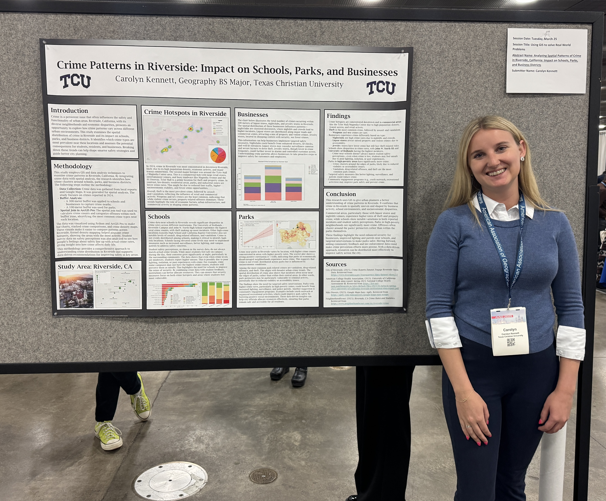

Riverside Crime Patterns near Schools, Parks, and Business Districts
(AAG 2025 – Detroit)
This study analyzes how crime clusters around schools, parks, and business districts in Riverside, California. Using spatial analysis tools, the project identifies crime hotspots and compares them with public perception of safety.
- Data: 2024 local crime reports and student perception survey.
- Methods: Buffer analysis (300m schools/businesses, 100m parks), spatial joins, and kernel density mapping in ArcGIS Pro and Python.
- Goal: Inform data-driven strategies for safer community planning.